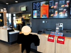
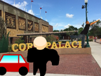
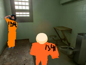
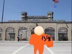
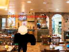
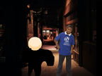
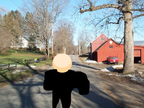
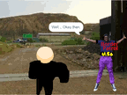

welcome to gangsterlifelover.com
Gangster Life: Story Mode Remakes were a point-and-click, action adventure video game series developed and published by GangsterLifeLoverr4, a developer and avid Gangster Life fan. The pseudonym GangsterLifeLoverr4 is a reference to the original Gangster Life: Story Mode series, which GangsterLifeLoverr4 is an avid fan of. Similar to the original series, the games are being published on Scratch. There were 11 games in the Gangster Life Remake series, however, only 7 older versions were archived before the tragic ban of gangsterliveloverr4's scratch page. you can play those archives below this text, click on "play turbowarp compile" to play.
Please refresh when you load this page for updates.
Gangster Life: Story mode Remake Prologue PART 1
Gangster Life: Story mode Remake Prologue PART 2
Gangster Life: Story mode Remake EPISODE 1
Gangster Life: Story mode Remake EPISODE 1 EPILOGUE
Gangster Life: Story mode Remake EPISODE 2
Gangster Life: Story mode Remake EPISODE 2 EPILOGUE
Gangster Life: Story mode Remake EPISODE 3
Gangster Life: Story Mode Remake EPISODE 3 EPILOGUE
Unavailable Episodes
Other Resources & News
original thumbnails archived 12/15/2023
projects archived 11/01/2023
info written by brody h & gangsterlifeloverr4, corrected by KS & skid.xml
gangsterlifelover.com credits & sources